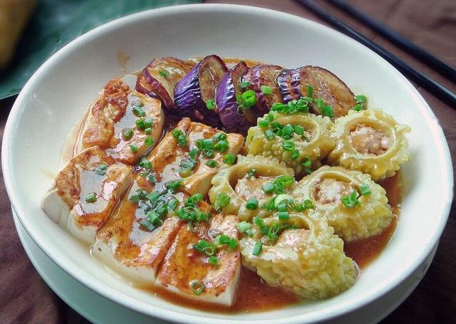
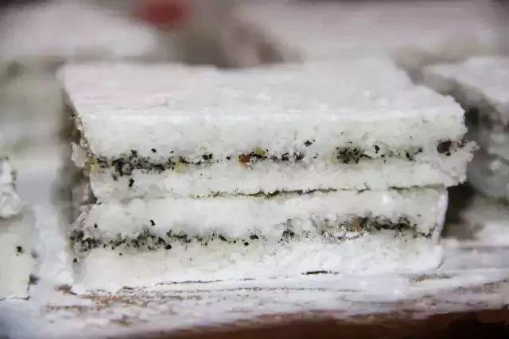
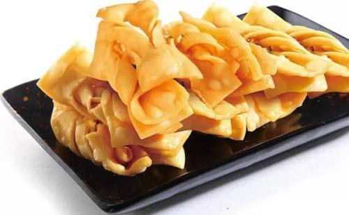
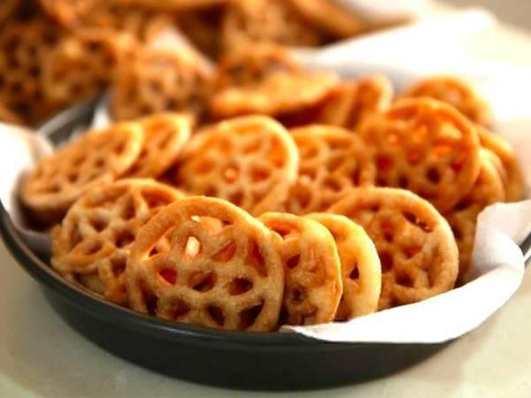

客家三酿
惠州深受客家文化的影响，客家菜中的客家三酿是用苦瓜、茄子、豆腐酿入肉馅烹饪而成的。味道醇香鲜美，口感丰富，百食不厌。

沙糕粄
沙糕粄是惠州的民间特色糕点,沙糕粄是用粘米粉、糯米粉、糖等制作而成的。食材的搭配十分讲究，蒸熟后米香味十足，吃起来软糯香甜，十分可口。

蛋散
蛋散是一道油炸小吃，以香脆而著称。色泽呈淡黄色，吃的时候可裹上糖浆。甜味浓郁，让人越吃越是滋味。

糖环
糖环外观独特，吃起来香脆清甜，是一道粤菜系，流传于惠州。在小街巷里，可以看到糖环的踪影，是很多当地人的美食记忆。